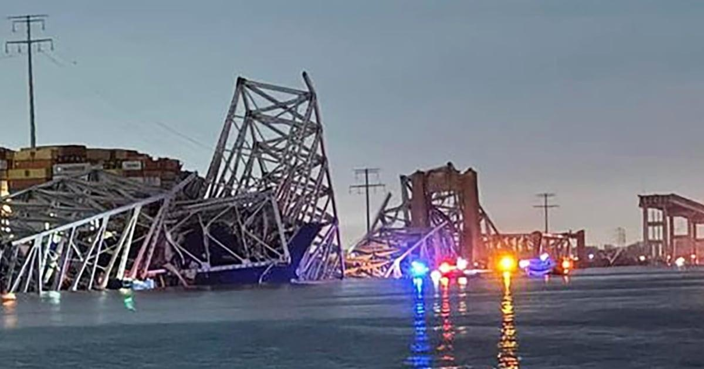

Ship hits bridge in BaltimoreCoast Guard says finding survivors unlikely after Francis Scott Key Bridge collapse Six members of a crew that was working on the bridge when the Dali, a 948-foot containership, struck the span are presumed dead. What we know - A major bridge in Baltimore partially collapsed overnight after it was hit by a cargo ship. Brawner Builders Inc. told NBC News that it had a construction crew on the Francis Scott Key Bridge when it collapsed. - Six people who were plunged into the river when it collapsed are presumed dead. Two people were rescued early in the day. Authorities believe all eight people were part of the construction crew. - By evening, the Coast Guard said the mission had transitioned from search and rescue to recovery. Authorities believe all eight people were part of the construction crew. - The Francis Scott Key Bridge, which carries Interstate 695 over the Patapsco River, was hit by the 948-foot Dali containership, the Coast Guard told NBC News. - Dramatic video shows the moment the bridge appears to snap and then tumble into the river after the vessel strikes one of its supporting structures. This live blog has now ended. Follow the latest updates here. Unfounded conspiracy theories spread online after Baltimore bridge collapse Outlandish conspiracy theories circulated on X after a containership struck a major bridge in Maryland, causing it to collapse, early this morning. The ship hit a supporting structure of the Francis Scott Key Bridge, which is southeast of metropolitan Baltimore. Maryland Gov. Wes Moore declared a state of emergency and said the calamity was most likely the result of an accident and not an act of terrorism. As rescuers search for survivors, some online conspiracy theorists have tried to uncover a nonexistent plot to explain the collision. Major news events â like the pandemic, natural disasters and mass shootings â now consistently serve as fodder for fringe figures, many of them on the far right, to amplify their world views, which often feature shadowy cabals or major unseen threats. View from the air of the collapsed bridge and the cargo ship BALTIMORE â The scene from the sky provides a view of the damage to the bridge after the deadly collapse. Trade association director says shipâs pilot tried to slow down The head of a trade association for maritime pilots says the pilot of the ship that caused the Baltimore bridge collapse tried to slow it down before the crash. Clay Diamond, executive director of the American Pilotsâ Association, said he has been in close contact with officials from the Association of Maryland Pilots, who described to him what happened as the ship approached the bridge. He said that when the ship was a few minutes out, it lost all power, including to its engines. The pilot immediately ordered the rudder hard to port to keep the ship from turning right and ordered the port anchor dropped, which it was, Diamond said. The pilot also contacted a dispatch office to get the bridge shut down. Diamond said widely circulated images show the shipâs lights turning off and then back on, sparking questions about whether the vessel had regained power. But, he said, the emergency generators that kicked in turned the lights back on but not the shipâs propulsion. Every foreign-flagged ship coming into U.S. waters must have a state-licensed pilot on board. Pilots board the ships before they enter the local waterways and take ânavigational controlâ of them, he said, meaning they give orders for the shipsâ speed and direction. âThese are among the most highly trained mariners in the world,â Diamond said. Drone video shows breadth of bridge collapse Drone video recorded by the National Transportation Safety Board shows the breadth of the Baltimore bridge collapse. NTSB Chairwoman Jennifer Homendy said earlier today that her agency is leading the investigation. The board says video captured after a major transportation accident can help it document wreckage, assess first responders' reactions, help train future investigators and serve as an element in an inquiry's conclusions. Gov. Wes Moore told Biden that Maryland is counting on his help, the governor said on NBC Newsâ âTop Story with Tom Llamas.â âI told the president that we need him. and the President said, âAnd you got us,ââ Moore said. âHearing the president earlier at a press conference saying that we were going to rebuild this together, itâs watching the secretary of transportation spend the afternoon in Baltimore," Moore said. "It meant the world to us, because it really showed that this administration is going to stand with us every step of the way." Moore said the bridge's collapse highlights the vital role infrastructure plays in America. "It is important that people have a sense of competence in the roads and bridges and tunnels that we have, you know, not just in our state but all throughout our country,â he said. Carnival temporarily moves Baltimore-based cruise ship to Virginia Carnival Cruise Line said it was moving its Baltimore-based cruise ship to Norfolk, Virginia, temporarily as recovery efforts in the Patapsco River were ongoing and affecting harbor traffic. The company ports its Carnival Legend cruise ship in Baltimore, where passengers board for cruises to the Bahamas. The 1,062-cabin vessel is off Florida en route to the Bahamas, according to cruise ship tracker CruiseMapper.com. When that voyage concludes Sunday, passengers will disembark at Norfolk, and transportation back to Baltimore will be provided, Carnival said in a statement today. Christine Duffy, president of Carnival Cruise Line, said in the company's statement, âOur thoughts remain with the impacted families and first responders in Baltimore." Finding survivors is unlikely, Coast Guard official says as search for survivors ends The search for survivors has concluded, a Coast Guard official said. Rear Adm. Shannon N. Gilreath said at a news conference that search-and-rescue operations were being suspended and would transition into a new phase â a search for bodies and their subsequent recovery. "Based on the length of time that we've gone into search the extensive search efforts that we put in it, the water temperature, at this point we do not believe that we're going to find any of these individuals still alive," he said. The Patapsco River's water temperature in Baltimore was 49 degrees before nightfall, according to National Oceanic and Atmospheric Administration data. Experts say surviving in water that cold for more than a few hours is unlikely without a wetsuit or other gear. The superintendent of state police, Col. Roland L. Butler, said divers would be deployed in the morning with a mission of recovering the bodies of six workers. Authorities said the divers faced limited to no visibility in the water today, with the possibility bridge debris could injure them or breach diving gear. "There's a tremendous amount of debris in the water," Butler said. He said the location of the six was still unknown. Butler also said that while authorities had no information to suggest additional victims or vehicles slipped into the water amid the bridge collapse, such an outcome could not be ruled out. Longshoreman who loaded containership thought call about collision was fake When Port of Baltimore longshoreman Shawn Jackson, who helped load the containership Dali, got a call from his father that the massive vessel had struck the Francis Scott Key Bridge and caused it to collapse, he didnât believe it. âWhen I got the phone call, I thought it was fake,â Jackson, 31, said today. Social media and then the news reports showed what had happened to the ship and the more-than-mile-long bridge. Six workers who were on the bridge are presumed dead, officials said. âWhen I woke up this morning, I almost wanted to cry, man,â Jackson said. Jackson was not present when the shop struck the bridge early this morning, but he helped load it. There was nothing strange or unusual about it. âJust a regular day,â he said. âI would never have thought in a million years that would happen.â Wife who says husband is among among missing awaits news near the bridge MarÃa del Carmen Castellón says that her husband, Miguel Luna, 49, is among the missing and that she's in a restricted area near the bridge awaiting news. He was working on the bridge overnight, one of six contracted workers who are unaccounted-for, when it collapsed. Other relatives have made it to the restricted area and have so far been allowed to stay, Castellon said on the phone. âThey only tell us that we have to wait and that they canât give us information,â she said when she was reached on the phone by NBC Spanish-language partner station WZDC-CD, better known as Telemundo Washington D.C. Asked how she feels, Del Carmen said, âDevastated, devastated because our heart is broken because we donât know how they have been rescued yet. We are just waiting for the news." Jesús Campos, Lunaâs co-worker, said the situation was heart-wrenching. He said his co-workers, some of whom he's known for years, were working on concrete replacement when the bridge went down. âIt hurts my heart to see what is happening," he said. "We are human beings, and they are my folks." Campos earlier told a local publication, The Baltimore Banner, that the missing are from El Salvador, Guatemala, Honduras and Mexico. Construction company executive says 6 workers presumed dead Six workers are presumed dead after the disaster that took down the Francis Scott Key Bridge, Jeffrey Pritzker, executive vice president of Brawner Builders, confirmed today. The Associated Press earlier reported that six workers were presumed dead, citing Pritzker. There was one survivor, Pritzker told NBC News. The company is not releasing names at this time. The Coast Guard has said that it deployed boats and a helicopter for a search-and-rescue operation, and it has not announced any change in the search status. Maritime safety has improved in recent decades, but risks remain Steven Mallam, a senior researcher at the Fisheries and Marine Institute of Memorial University of Newfoundland, said in an email that maritime safety has improved in recent decades even as shipping has grown in a variety of ways, from the number and size of ships to the amount of cargo that is sent across oceans. Still, risks remain. "Overall, maritime operations in general have made big steps in safety and reliability over the past few decades, however, incident and accidents are still continuing to occur," he wrote in the email. He pointed to the Ever Given, a large containership that got stuck in the Suez Canal in 2021, and the collision of a U.S. guided-missile destroyer with an oil tanker as examples of some recent maritime mishaps. "There are variations from year to year of course, but the general trend is a much improved safety record," he added. Building Baltimore bridge from ground up will take âmuch longerâ than reusing wreckage, expert says Engineer Andrew Bechtel provides expertise about the incident and weighs in on what rebuilding could look like. Buttigieg downplays concerns about U.S. bridges, calls Baltimore incident and collapse 'unique' Speaking with reporters this afternoon, Transportation Secretary Pete Buttigieg sought to tamp down concerns about the safety and durability of other bridges in the country. "This is a unique circumstance," Buttigieg said. "I do not know of a bridge that has been constructed to withstand a direct impact from a vessel of this size." Buttigieg also promised that the Biden administration would provide Marylanders with support "for as long as it takes," noting the significance of the Key Bridge to the city of Baltimore and to the nation. "This is no ordinary bridge," he said. "This is one of the cathedrals of American infrastructure. It has been part of the skyline of this region for longer than many of us have been alive." Buttigieg added that the "path to normalcy will not be easy," quick or inexpensive. "So in many ways, our work is just beginning to rebuild this bridge and deal with impacts in the meantime, to reopen this port and deal with supply chain impacts in the meantime," he said. "But today we are most acutely focused on the emergency operations underway and on the families that have been impacted." Buttigieg says collapse will have a 'major and protracted impact' on supply chains Secretary of Transportation Pete Buttigieg acknowledged that the collapse of the Francis Scott Key Bridge will have a "major and protracted impact" on supply chains. "There is no question that this will be a major and protracted impact to supply chains," Buttigieg said, addressing reporters Tuesday afternoon. "Itâs too soon to offer estimates on what it will take to clear the channel and reopen the port." The Port of Baltimore is the biggest automobile shipping hub in the country. 'Very much still a search and rescue mission,' Maryland governor says Flanked by Transportation Secretary Pete Buttigieg, Baltimore Mayor Brandon Scott and other government officials, Maryland Gov. Wes Moore said authorities are still searching for survivors. "This is very much still a search and rescue mission," Moore said. "We are still actively looking for survivors ... and thatâs a pledge we made to these families." "There is not a single resource that we will hold off on deploying. I have already authorized the deployment of everything from air, land and sea resources to make sure that this search and rescue operation is carried out to its fullest intent," he added. Moore acknowledged that the path ahead to heal the community will not be short or easy. "Thereâs going to be a long road, not just as we go from search and rescue," he said. "Thereâll be a long road as we talk about, 'What does the future of this region, the future of the area look like?' And weâre gonna need each and every one of you." NTSB has not boarded ship yet, don't have access to 'critical' data recorders National Transportation Safety Board Chair Jennifer Homendy said that the agency's investigators have not yet boarded the cargo ship to access voice data recorders. Homendy said that the agency did not want to interfere with the search and rescue operation by authorities and will most likely board the ship for its investigation tomorrow. "We chose not to board the vessel today to allow some time for the search and recovery which we did not want to interfere with, that is that first and foremost," Homendy said. "We do have some information, but we need to verify that information first before I provide that information." Homendy noted that retrieving the ship's voice data recorders will be "critical" in the NTSB's investigation. Satellite images show bridge before and after collapse Ship appeared to have 'serious mechanical issues,' captain and maritime instructor says Capt. Morgan McManus, an instructor at SUNY Maritime College in New York who has worked on containerships, said he could tell there were âserious mechanical issuesâ with the shipping vessel that struck the Francis Scott Key Bridge. McManus said video of the Dali, showing its lights going on and off and not taking any apparent evasive maneuvers in the minutes before it strikes the bridge, indicated a loss of power and steering. When that happens, âyouâre basically driving out of control,â McManus said. âThere is no worse feeling on a ship than when it goes silent,â he said. By that point, the Dali would have already left tugboats and a docking pilot behind but would have remained under the guidance of a harbor pilot, McManus said. A statement from the Daliâs owner said the ship had two pilots on board, but it didnât specify what kind. Ships can drop anchors to avert collisions, but given the Daliâs size, speed and distance from the bridge, such a move most likely wouldnât have helped, McManus said. He said that the video appears to show the Daliâs anchors dropped but that it wasnât clear to him whether that was done before or after the impact. An investigation will most likely look at why the Dali lost power and propulsion and include examinations of maintenance logs and inspection reports, McManus said. According to data on the website Equasis, an inspection of the Dali in Chile in June noted âdeficienciesâ in âpropulsion and auxiliary machinery,â including gauges and thermometers. But the ship had subsequent inspections, including one in September in New York, in which no deficiencies were noted. McManus stressed that those recorded deficiencies donât necessarily mean anything related to the crash. They âcould have been paperwork,â he said. 'Like a scene out of a movie': Only 4 minutes between ship's lights going off and collapse NBC Newsâ Ryan Nobles breaks down the Francis Scott Key Bridge collpase timeline that appears to show the four minutes between the moment the cargo shipâs lights went off to the moment the bridge collapsed. Twisted wreckage in Baltimore stands as a memorial to people gathering to grieve BALTIMORE â Theyâd gotten text messages in the middle of the night or woke this morning to the frightening news that the Francis Scott Key Bridge had been struck by an immense cargo ship and collapsed. So, these Baltimore residents leashed their dogs and gathered up friends and family to head to the Fort McHenry seawall, with its heart-rending view of the twisted remains of what for decades had been a comforting landmark, a symbol of home. There, they stared across Baltimore harbor as Coast Guard ships searched for survivors. Quietly, they grieved for the dead and hoped that the living might still be plucked from the cold waters. They still donât know who may have died when parts of the bridge fell into the Patapsco River. Ship that hit bridge was in 2016 collision in Belgium The container ship that hit the Francis Scott Key Bridge early Tuesday, the MS Dali, crashed into the Port of Antwerp in Belgium in 2016, port authorities there said. That collision, on July 11, 2016, resulted in a quay wall being damaged, Antwerp port authorities said in a statement. An investigation was conducted by the Belgian nautical commission. It's not clear what the results were. The port didnât disclose a cause of the accident, but said that âin case an incident happens, a ship can only leave the port after experts have determined that it can sail safely.â Video from that incident shows the ship crashing into a wall at the port. Massive engineering task lies ahead after bridge collapse NBC News' Tom Costello reports that it will be a major project to clear the debris and reopen the Port of Baltimore following the bridge collapse. The water beneath the bridge is believed to be about 50-feet deep, Costello added, so there will be difficult job ahead for reopening the port. As the 11th largest port in the U.S., the port is critical for cargo shipping and its closing could affect vehicle sales on the East Coast, Costello said. Costello added that while two victims were rescued from the water following the collapse, six remain missing. With water temperatures still very low, Costello said there are concerns about survivability. Engineer explains the Key Bridge collapse Sameh Badie, a professor of engineering at George Washington University, discussed the collapse of Francis Scott Key Bridge on NBC Washington on Tuesday, explaining that the structure of the bridge could not handle the load of its span after one piece had been destroyed in the collision. Badie said that the Key Bridge is a continuous steel truss bridge. When the cargo vessel collided with one of the more central piers of the bridge, it could no longer sustain the full span of its weight, causing the collapse, Badie said. Badie added that the bridge was built in the 1970s, when the size and load of weight of the vessels crossing beneath the bridge were much smaller than the vessel that collided with the bridge today. Aerial photos show extent of damage The cargo ship Dali sits in the water several hours after running into and causing the collapse of the Francis Scott Key Bridge in Baltimore. Biden says federal government will pay to rebuild bridge Biden said in brief remarks today: âItâs my intention that the federal government will pay for the entire cost of reconstructing that bridge." "I expect Congress to support my effort. This is going to take some time. The people of Baltimore can count of us to stick with them at every step of the way until the port is reopened and the bridge is rebuilt," he added. When pressed further on why the federal government will pay for repairs when the ship may have some culpability, he said, âthat could be but weâre not going to wait for that to happen. Weâre going to pay for it to get the bridge rebuilt and open.â Biden said he plans to visit Baltimore âas quickly as I can.â Biden calls collapse a 'terrible accident' Biden said today from the White House that he's spoken with Marylandâs governor, Baltimoreâs mayor and other officials and has assured them, âWeâre going to rebuild that port together.â Biden said the government will send "all the federal resources they need as they respond to this emergency." He noted he has been over the Francis Scott Key Bridge âmany, many timesâ in his commutes from Delaware. He said eight people were unaccounted for in the collapse, two of whom were rescued â one without injury, one in critical condition. He shared "thoughts and prayers" for the families impacted and noted so far reports indicate this was "a terrible accident" and not an "intentional act." A timeline of the crash, collapse and initial response 1:24 a.m.: The ship's lights turn off. 1:25 a.m.: The ship's lights turn back on. 1:25 a.m.: Dark black smoke starts billowing from ship's chimney. 1:26 a.m. The ship appears to turn. 1:26 a.m. The ship's lights turn off again. 1:27 a.m. The ship's lights turn back on. 1:28 a.m. The ship crashes into the Francis Scott Key Bridge. 1:28:43 a.m. The bridge collapses. 1:40 a.m.: The 911 center dispatches calls to the Baltimore City Fire Department (BCFD) for reports of water rescue in the Patapsco River, according to Baltimore Fire Chief James Wallace. As units were responding, fire officials started receiving calls of multiple people in the water. 1:50 a.m.: The first fire unit arrives on the scene and reports a complete collapse of Key Bridge, Wallace said. The fire department was given information that there were âlikely multiple people on the bridge," who were now in the water, Wallace said. Some missing workers recently welcomed babies, colleague says Some of the construction workers who are now unaccounted for after the bridge collapse recently had babies, one of their colleagues said. About three or four of the Brawner Builders crew members had welcomed babies within the last year, according to Earl Schneider, a structural foreman with the company. âI know everybody on that crew personally. Theyâre all great people,â he said. âItâs tough. Itâs been a rough morning." Schneider, 33, said he last worked on the bridge about two weeks ago. He woke up around 2 a.m. to frantic phone calls from a friend who works at a hospital, who thought Schneider might have been on the bridge early this morning. Schneider said he then called the crew members he knew were on the bridge, but all the calls went to voicemail. âItâs tragic in a sense of like, itâs a blessing I wasnât on there, but it comes at the cost of somebody else,â he said. âFolks had their lives changed in a blink of an eye. You donât know how much time youâve got.â Teen describes being awakened by Baltimore bridge collapse Baltimore resident Kayleigh Gray, 14, was startled awake early today when she heard âa real loud boomâ and her bed started shaking as a cargo ship slammed into the Francis Scott Key Bridge. âSince I was asleep, my grandmother woke me up and said, âThe bridge is gone.â I said, âWhat are you talking about?â She said, âThe ship hit it.â I said, âThereâs no way. Youâreâ lying,â Gray told NBC News correspondent George Solis. Her grandmother then showed her video footage of the devastating crash. She said she and her family go over that bridge every day. Her first thoughts went to the people impacted. âI was worried about the families to be honest ... I called friends. We called friends and family seeing who was on the bridge. Because my grandfather, heâs supposed to go over that bridge every day. Heâs a truck driver. He was supposed to be on that bridge today around 7:30 a.m.,â Gray said. She said the bridge means "a lot" to people who grew up in the area and hopes that it'll be rebuilt. Worker recently moved off bridge repair is in 'shock' A construction worker who was recently moved off a project to repair the bridge is in âshockâ as he waits for news on at least six of his colleagues who are now missing. James Krutzfeldt, 34, a foreman for Brawner Builders, told NBC News he was working on the bridge about two weeks ago. One of his colleagues who was unaccounted for this morning is another foreman whom Krutzfeldt considers his mentor and âwork dad.â âWeâre all just waiting for a phone call,â he said. âItâs all up in the air. Weâre waiting on our boss and owner to break it down to everybody.â At least seven workers were pouring concrete to fix potholes on the roadway on the bridge directly above where the ship hit, Krutzfeldt said. That repair project has been going on for about four years, he said. âWe all bounce around,â he said. âItâs sad. I havenât really realized it yet. Iâm still kind of in shock.â Biden addresses Key Bridge collapse after briefing Biden was briefed on the collapse of the Francis Scott Key Bridge this morning by senior members of his team, according to a post to his X account. The president emphasized that the White House is committed to supporting the response to the collapse. "Iâve directed my Administration to ensure every federal resource is available to assist search and rescue efforts and response to this terrible incident," the post read. Biden is scheduled to speak at 12:30 ET on the collapse. âCould never imagine:â Baltimore resident describes moment he heard bridge collapse BALTIMORE â A resident of suburban Baltimore who can see the Francis Scott Key Bridge from his backyard said he woke up in the middle of the night to his home shaking. "I could have never, never imagined that it was the Key Bridge that had just collapsed," Georgio Comninos said. "I thought it was perhaps like a really low flying, maybe a military jet, perhaps a small earthquake however unlikely that is in Baltimore." He questioned why the bridge collapsed so quickly after its collision with the cargo ship. "I mean, was this thing held up with toothpicks?" Comninos asked. "Whatâs the deal? Maersk pauses shipping through Baltimore port Maersk, a shipping company with vessels in the Baltimore port, released a new customer advisory pausing its shipping through the Helen Delich Bentley Port of Baltimore for the time being. The company said that it would be "omitting Baltimore on all our services for the foreseeable future, until it is deemed safe for passage through this area." "We are deeply concerned by this incident and are closely monitoring the situation," Maersk's advisory said. NTSB to hold press conference on bridge collapse The National Transportation Safety Board will hold a press conference at 2:30 p.m. ET on the investigation into the Francis Scott Key Bridge collapse. Size of ship negated any measures meant to deflect ships, Johns Hopkins professor says The ship that hit the Francis Scott Key Bridge was big enough that any safety measures meant to try to limit the impact of a collision would have been rendered ineffective, according to Benjamin Schafer, a professor of civil and systems engineering at the nearby Johns Hopkins University. He stressed that any failure in this situation is centered on the broader issue of maritime safety and infrastructure development. He said that container ships like the Dali are âa different animalâ when it comes to dealing with safety and collisions. "Iâm afraid that this is not something that any bridge would be designed to withstand," he said. "We need to make sure this collision does not happen." "Whereâs lessons to be learned here about about how we manage our infrastructure that we need to learn quickly," he added. Buttigieg to travel to Baltimore Transportation Secretary Pete Buttigieg will go to the Francis Scott Key Bridge collapse today to receive updates at the invitation of Moore. Workers on the bridge fixing potholes at time of collapse, transportation secretary says There were workers on the Key Bridge fixing potholes at the time of the collapse, Maryland Transportation Secretary Paul Wiedefeld told reporters in a briefing this morning. Rescue teams continue looking for six people after two were rescued overnight, he said. Royal Caribbean says its searching for alternatives to Port of Baltimore Royal Caribbean said it is searching for alternative ports for its cruise ships scheduled to go in and out of the Port of Baltimore, the 29th largest cruise port in the U.S. "We are deeply saddened by the tragedy and collapse of the Francis Scott Key Bridge and extend our heartfelt prayers to all those impacted," a spokesperson for the cruise line said in a statement. "We are closely monitoring the situation, and our port logistics team is currently working on alternatives for Vision of the Seasâ ongoing and upcoming sailings." "Any updates will be communicated to our guests and travel partners once our plans are finalized," the spokesperson added. Dali crew members notified authorities they lost power, governor says Moore told reporters this morning that crew members of the Dali container ship that collided with the Key Bridge this morning had notified authorities that they had a power issue. Biden expected to address bridge collapse today President Joe Biden is expected to address the Baltimore bridge collapse before he departs for North Carolina today, a White House official confirmed to NBC News. Reconstruction of the bridge will be a 'long-term build,' governor says Moore said reconstructing the collapsed Key Bridge will be a "long-term build." "It's going to be a build that's going to require every facet and every aspect of our society. It is something that I can tell you we are going to get this done," he said, adding that he can't comment on the time and money it would take as the focus for now remains on saving lives. Baltimore county executive addresses collapse Baltimore County Executive Johnny Olszewski called the collapse "devastating" and said his "first and most important priority" is to search for and rescue survivors. "In the days and weeks ahead there will be many questions about the impact of this incident on our families, regional traffic and commerce," he said in a statement released on X. "We will work closely with state and federal partners to make sure we are doing all we can to support everyone impacted." Olszewski also thanked first responders and called on the Baltimore community to use the tragedy as an opportunity to come together. Cruise Lines International Association monitoring bridge collapse The Cruise Lines International Association, the largest cruise industry trade association, said it is âclosely followingâ the Baltimore bridge collapse. âWe are deeply saddened by the tragedy and collapse of the Key Bridge that occurred last night and extend our support and heartfelt prayers to all those impacted,â a statement said. âWe join everyone in extending our thanks and appreciation to the first responders and emergency workers in Baltimore, the U.S. Coast Guard, and other professionals who are working with one goal in mind â to save lives.â The Port of Baltimore is the 29th largest cruise port in the U.S. âAny adjustments to current cruise activity at the port will be announced as soon as available by the individual cruise lines,â the association said. Maryland governor: 'We are Baltimore strong' Moore appeared to try to motivate and reassure Marylanders shortly after addressing reporters for the first time since the collapse. "In the face of danger, we hold out. In the face of heartbreak, we come together, and we come back stronger," Moore wrote on X. "That is what weâve always done. Thatâs what we will continue to do." The governor â who was elected in 2022 â also commended first responders and commended what he described as quick coordination among local, state and federal government agencies. "Our administration is working closely with leaders at all levels of government and society to respond to this crisis," Moore wrote. "Not just by addressing the immediate aftermath, but also by building a state that is more resilient and more safe." Vehicles were stopped from getting onto the bridge after collapse, saving lives, Maryland governor says Between the mayday call and the collapse of the Key Bridge, officials were able to stop the flow of traffic from continuing onto the collapsed bridge, Moore told reporters this morning. He warned that the investigation is still ongoing and they don't have full details, but that the response may have prevented more casualties. Six people were unaccounted for and two had been rescued, according to authorities. "Many of the vehicles were stopped before they got onto the bridge, which saved lives," Moore said. 'We stand ready to support Baltimore,' D.C. mayor says Washington, D.C., Mayor Muriel Bowser offered prayers for âall those impacted by the collapse of the Francis Scott Key Bridge.â âThis morning, I reached out to Mayor Scott, and we stand ready to support Baltimore in these difficult days ahead,â she wrote on X. Earlier this morning, the mayor had responded "Oh no," to a tweet sharing video of the bridge collapse, which was met with a flurry of mocking tweets by other X users. University of Maryland hospital said it received one patient following collapse The University of Maryland Medical Center received a patient at its trauma center following the collapse, Michael Schwartzberg, a spokesperson for the hospital, said in a statement. He did not disclose the patient's condition, but added that the person has already been discharged. 'Our state is in shock': Maryland governor says no credible evidence of terror attack The preliminary investigation of the Key Bridge collapse points to an accident, and there is no credible evidence of a terror attack, Moore told reporters in a briefing. "This morning, our state is in shock," he said, adding that the response teams are doing everything in their power to rescue and recover victims of the collapse. "To the victims of this tragedy and their loved ones: All of our hearts are broken," he said. The FBI in Baltimore also said there was "no specific and credible information to suggest any ties to terrorism at this time." The investigation is ongoing, the FBI said on X. Brawner Builders confirms it had a crew on Key Bridge at time of collapse A representative from Brawner Builders Inc. told NBC News that the company had a construction crew on the Francis Scott Key Bridge when it collapsed. The company declined to give further details, including how many employees were working at the time of the crash or are still missing. Earlier this morning, NBC News spoke with the daughter-in-law of Miguel Luna, a Brawner Builders construction worker who was on the bridge. She declined to be interviewed, but did share that she went to the convenience store closest to the bridgeâs road closure after receiving a call about the accident to try to get information. As of this writing, she still has not heard any news about her relative from authorities. Maryland senator calls collapse 'a terrible tragedy' Sen. Chris Van Hollen, D-Md., today called the Francis Scott Key Bridge collapse âa terrible tragedy for our City and our State.â âIâm praying for those who were on the bridge, and I know there are urgent rescue efforts still underway. Iâm thankful for the first responders and emergency crews who are at the scene and are working tirelessly on these efforts,â he said. Van Hollen said he was heading to Baltimore and is closely monitoring the situation, and has been in touch with the governor and local officials. âWe are quickly working to address this situation, and I know, as always, Baltimore will come together, united to face this tragedy.â Baltimore mayor declares state of emergency Scott officially declared a local state of emergency in response to the collapse. "Our teams are mobilizing resources and working swiftly to address this crisis and ensure the safety and well-being of our community," he said in a post on X. The declaration went into effect at 9 a.m. ET today and will remain in effect for 30 days, according to the mayor's executive order. More than 11 million vehicles pass over Francis Scott Key Bridge every year The Francis Scott Key Bridge, which runs through the area, sees 31,000 vehicles pass on it a day â or 11.3 million a year, according the Maryland Transportation Authority. What is the Port of Baltimore? The Port of Baltimore is the deepest harbor in the Chesapeake Bay and is the No. 1 port in the country for handling automobiles. Last year, it handled 847,158 cars and light trucks, the 13th year in a row it has led all other U.S. ports in handling auto commodities, according to the state. It's ranked ninth nationally based on the value of its cargo. Last year, it handled 52.3 million tons and $80.8 billion worth of foreign cargo. Cruise ships, such as Carnival, Royal Caribbean and Norwegian, also sail out of the port. Close-up photos reveal extent of bridge damage Images released by the Baltimore City Fire Department reveal close detail of the damage caused to the Francis Scott Key Bridge in Baltimore, after it was struck by a cargo ship this morning.Another image shows a section of the stricken cargo shipâs bow, which was violently ripped apart by the collision. NTSB to send team to Baltimore The National Transportation Safety Board is sending a team to Baltimore today. Chair Jennifer Homendy will be in attendance as the NTSB's spokesperson. What was happening to the Dali ship moments before bridge collapse? A livestream of the Key Bridge collapse early this morning sheds some light on what was happening with the Dali as the ship neared the bridge. Around 1:24 a.m. ET, the ship's lights turn off but only a minute later come back on. Then 10 seconds later, dark black smoke can be seen billowing from the ship's chimney. At 1:26 a.m., the ship appears to turn and moments later loses its lights again. They come back on half a minute later. At 1:28 a.m., the ship can be seen making impact with the bridge, followed by the span's complete collapse. Pride and emotion as Baltimore resident says goodbye to beloved bridge To the people of Maryland, this was more than just a bridge â it was a symbol of local pride. "I was always proud because of being from Baltimore, that was one of the proud things that we built that, you know, and it [was] still standing," Chantel Debord, who lives in Baltimore, said in an interview with NBC News. "And just being able to say that our port is one of the reasons why the East Coast over here gets a lot of their product," she added. Debord predicted that taxes could rise, plus the region could see a big hit to its fishing industry, as well as longer commutes. Her reaction was infused with a profound sense of loss. "Itâs sad to see that itâs gone. A lot of hard work in there. A lot of Baltimore people have built it, and people from Maryland, and itâs completely gone," she said. "People lost their lives and now people are gonna lose their livelihoods." Debord asked her daughter to take pictures as the pair drove over the bridge two weeks ago, not knowing it would be their last time. Aerial footage reveals scale of bridge collapse A cargo ship collided with the Francis Scott Key Bridge in Baltimore, in the early hours of today. No-fly zone established in area of bridge collapse A no-fly zone has been established in the area around the Baltimore bridge collapse, effective until further notice. Drones are also not allowed to fly in the area, the Federal Aviation Administration said. âDo not interfere with rescue operations. If you fly, emergency response operations cannot,â the FAA said in a warning on X. Water temperature in the harbor is around 47 degrees The water temperature in the Patapsco River at the site of the Key Bridge collapse this morning is currently around 47 degrees Fahrenheit, according to buoy data from the National Oceanic and Atmospheric Administration. A number of people are feared to have fallen into the water after the bridge collapsed, though details are unclear. Hypothermia can occur in any water temperature below 70 degrees, according to the Centers for Disease Control and Prevention. Biden briefed on bridge collapse President Joe Biden has been briefed on the Francis Scott Key Bridge collapse in Baltimore and ongoing search and rescue efforts, a White House official said today. "He will continue to receive updates from his team throughout the day," the official said. Reconstruction 'could cost 10 times more' than the $60 million build price, leading British engineer says Reconstruction of the Key Bridge could cost over 10 times more than the $60 million it cost to construct it in 1977, a leading British engineer told NBC News today. David MacKenzie, senior director of COWI, a British engineering and architecture consultancy firm, said the bridge could be reconstructed in two years âif people get their skates on.â âIt has to be built quickly because of the pressure on commuter traffic, so procurement will have to be shortcut, so it will be a very expensive rebuild,â added MacKenzie, a long span bridge engineer. He said that âthere was nothing unusual about the bridge,â before it collapsed and there âwas some ship impact protection in the form of big concrete obstacles. But the ship which crashed into the bridge has âsomehow got past those,â he said.    Container ships when the bridge was built in 1977 âwere a lot smaller than they are now,â he said, adding that a risk assessment should have picked up on the dangers posed by modern vessels.  People would expect the new bridge âto be more robust,â he added. It would likely take a matter of weeks to clean up the debris, he said, adding that the larger pieces would probably be blown up into smaller pieces and then collected by a crane ship. Ship's managing company says all 22 crew members accounted for The managing company of the ship that collided with the Key Bridge this morning said that all 22 crew members on board, including two pilots, have been accounted for and there were no reports of any injuries. In a statement to NBC News, Synergy Marine Group said the owners and managers of the Dali container ship, which was bound for Sri Lanka, were fully cooperating with federal and state government agencies. The company added that the exact cause of the incident is yet to be determined. Bridge collapse revealed in daylight images The steel frame of the Francis Scott Key Bridge sits on top of the container ship after it struck the span in Baltimore, this morning. Bridge collapse an 'unthinkable tragedy,' mayor says as workers' fate remains unknown As loved ones of workers believed to have been on the bridge during the collapse gathered nearby earlier today, there was still no official confirmation of their fate. "We were being told there were workers on the bridge, we have yet to confirm that," Baltimore City Fire Department Chief James Wallace told reporters this morning. At the same news conference, Baltimore Mayor Brandon Scott called the incident "an unthinkable tragedy." White House is monitoring bridge collapse The White House is monitoring the bridge collapse and is in touch with the Maryland governor and the Baltimore mayor to offer federal assistance, a White House official told NBC News. The official also said there does not appear to be any evidence that the collapse is the result of "nefarious intent." "Our hearts go out to the families of those who remain missing as a result of this horrific incident," the official said. Sonar detects vehicles submerged in the water after bridge collapse, fire chief says Sonar has been used to detect the presence of vehicles submerged in the water after the bridge collapse this morning, but emergency crews donât have a count of exactly how many yet, Baltimore City Fire Department Chief James Wallace said in his briefing with reporters. He said there were likely multiple people on the bridge at the time of the collapse, and as a result, likely multiple people in the water. Crews are still very much in an active search and rescue stage, Wallace added, and will continue to be for some time, searching both above and below water, as well as on the deck of the ship that hit the bridge. The crews are using different types of sonar capabilities, underwater drones and infrared technology, he said. Search underway for at least 7 people after bridge collapse, fire chief says Rescue teams are looking for at least seven people after the Key Bridge collapse, Baltimore City Fire Department Chief James Wallace has said in a briefing with reporters. He said it's a "dynamic count" that they have not nailed down yet, as the search and rescue operation continues. Two people were rescued after the collapse, Wallace said, with one in serious condition. Maryland governor declares state of emergency after bridge collapse Moore has declared a state of emergency after the Key Bridge collapse, saying he is working with an interagency team to quickly deploy federal resources. "We are thankful for the brave men and women who are carrying out efforts to rescue those involved and pray for everyoneâs safety," he said in a statement. Loved ones of people working on the bridge at the time of collapse gather nearby BALTIMORE â A group of people who say they are family members of workers employed by Brawner Builders Inc. have gathered at a Royal Farms convenience store near the entrance of the Francis Scott Key Bridge. They say their loved ones were working on the bridge at the time. One woman told NBC News her father-in-law, Miguel Luna, was among the workers. They went to the store because it was the closest they could get to the bridge, but they have yet to get any formal guidance as to the status of their loved ones, they said. Disconnected bridge structure seen from the roadside Parts of the Francis Scott Key Bridge remain after a container ship collided with a support in the early hours of today. Transportation Secretary Pete Buttigieg offers support following bridge collapse Transportation Secretary Pete Buttigieg said he has offered his support to Maryland's governor and Baltimore's mayor, as rescue efforts remain ongoing. 'Please pray for those impacted': Baltimore County executive Baltimore County Executive Johnny Olszewski, Jr. said on X that he was aware of the incident and rescue efforts were underway. Dramatic moment of bridge collapse captured on video The moment of the Key Bridge collapse was captured on a livestream early today, showing a container ship seemingly colliding with one of the bridge's support pylons. Following the contact, the entire central span of the bridge can be seen collapsing into the water below, as well as onto the ship itself, within seconds. Just moments before the collapse, vehicles could be seen atop the bridge. It's not clear how many people or vehicles may have ended up in the water as a result of the collapse. Map shows location of Francis Scott Key Bridge in Baltimore 948-foot vessel collided with Key Bridge, U.S. Coast Guard says The vessel that collided with the Key Bridge early today is a 948-foot vessel named the Dali, the U.S. Coast Guard has told NBC News. The Coast Guard received a report at 1:27 a.m. ET that the vessel made impact with the bridge. It has deployed three response boats, and pollution responders are en route to the scene, according to Petty Officer First Class Matthew West. The marine traffic tracker vesselfinder.com has the Singapore-flagged container ship currently located in Baltimore. It says it was headed for Colombo, Sri Lanka, and was expected to arrive there April 22. Maryland Transportation Authority warns of 'active scene' as traffic rerouted from collapsed bridge The Maryland Transportation Authority (MDTA) has warned drivers to avoid the I-695 southeast corridor after the Francis Scott Key Bridge collapse early this morning, calling it an "active scene." The authority is advising drivers to use I-95 or I-895 instead. It earlier said that all lanes were closed in both directions on the bridge, and traffic was being rerouted. Photo shows collapsed bridge The collapsed Francis Scott Key Bridge in Baltimore this morning. Baltimore mayor en route to the scene of the bridge collapse The mayor of Baltimore has said he is headed to the scene. Major bridge in Maryland collapses after being hit by a ship A major bridge in Baltimore partially collapsed this morning, possibly leaving a number of people in the river below, authorities said. A spokesperson for Baltimore Police Department told NBC News that it had been notified of the incident at the Francis Scott Key Bridge, an enormous steel structure which carries Interstate 695 over the Patapsco River southeast of the Baltimore metropolitan area. âI can confirm at 1:35 a.m., Baltimore City police were notified of a partial bridge collapse, with workers possibly in the water, at the Francis Scott Key Bridge,â Detective Niki Fennoy said in a statement. |
 |